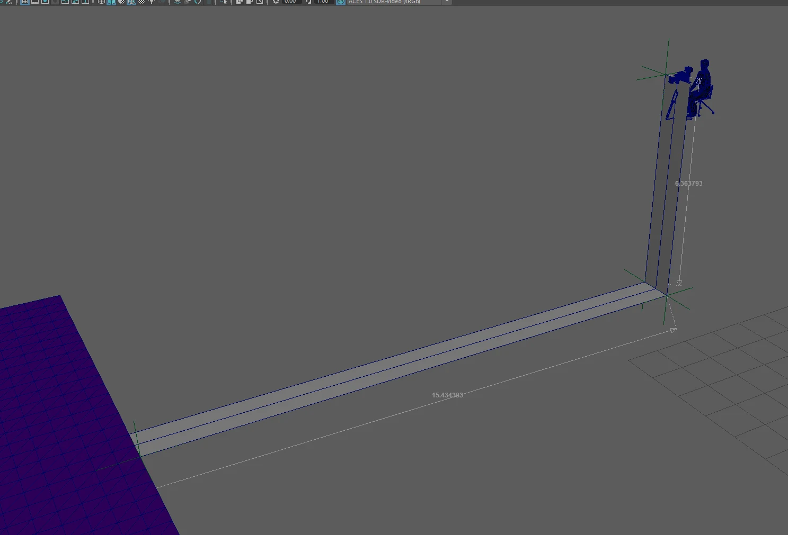
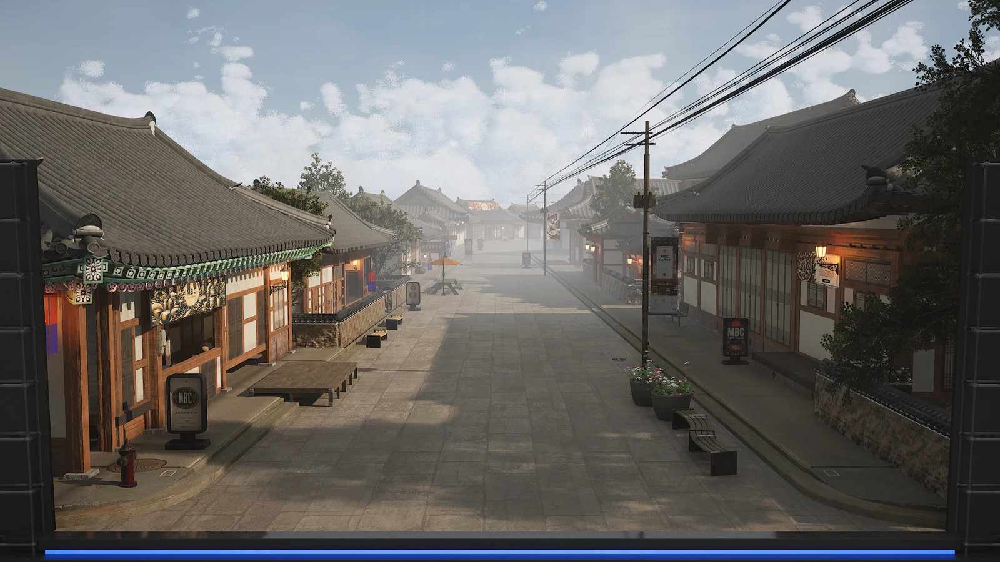
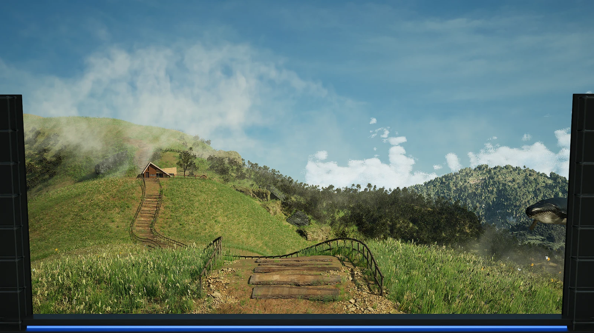
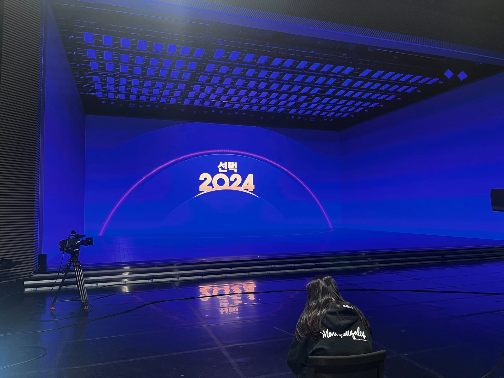

MBC 선거방송
MBC 선거방송에 사용할 LED에 사용될 환경을 제작했다. 고정된 카메라에서 보았을 때 스튜디오가 가상 공간으로 이어져 보이도록 Unreal Engine 안에 실제 스튜디오와 같은 구조물을 배치하고 카메라 위치와 LED 사이즈를 초기 구성을 담당하였다.
작업자들이 각자 환경을 맡아 제작했으며 담당 환경 제작과 프로젝트 에셋, 머티리얼 등 폴더 규약, 네이밍 규약, 내부망 파일 정리 규약, Maya 작업 시간 기록 스크립트를 제작하였다.
1. 스튜디오에 맞춘 환경 제작
LED에 이미지를 띄웠을 때 정해진 카메라 위치에서 하나의 공간처럼 보여야 하는 프로젝트였다. 이를 위해 사전에 테크비즈로 카메라와 스튜디오 위치를 확인하고 Unreal Engine에서도 실제 스튜디오와 동일하게 제작을 하였다.
이 조건 기준으로 작업자들이 맡은 담당 환경을 제작하였다.






2. 면별 렌더링과 스티칭
완성한 환경은 정면, 바닥, 왼쪽, 오른쪽 면으로 나눠 렌더링을 진행했고 이후 Nuke에서 각 면의 영상을 스티칭해 LED에 사용할 화면으로 하나의 영상으로 제작했다.
스튜디오와 같은 조건에서 제작한 영상이 현장 카메라 시점에서 자연스럽게 이어지도록 작업을 진행했다.
3. 폴더 규약과 작업 시간 스크립트
여러 환경을 함께 제작하면서 사용할 Unreal Engine 프로젝트 폴더 규약과 내부망 폴더 규약을 처음으로 팀 내에 정리 후 문서화하여 공유하였다.
환경별 작업 시간을 기록해야 했기 때문에 Maya에서 사용할 시간 기록용 스크립트도 제작했다.
기록은 .log 파일로 출력되어 PM님이 관리하는 Google Sheets에 올라가도록 셋업했다.
메이킹

